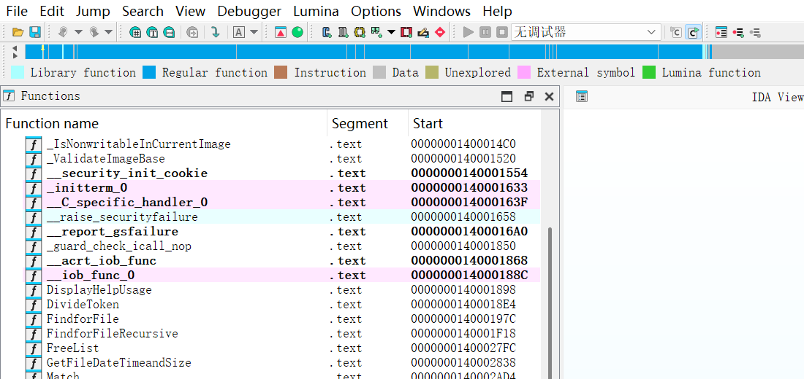
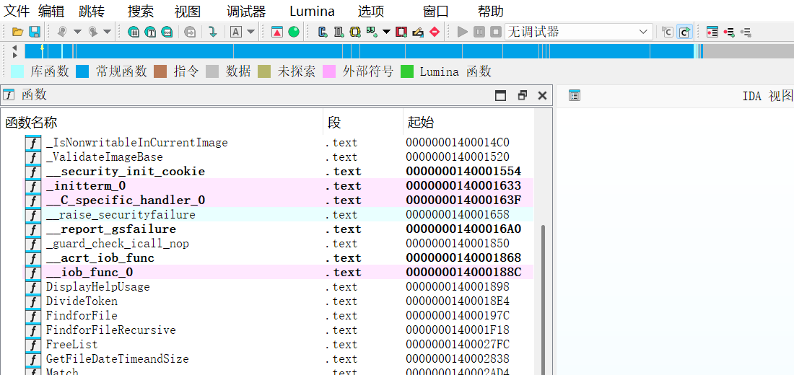

同一个窗口，同一份数据库
菜单栏 · 工具栏 · 导航带图例 · 停靠窗口标题 · 列表表头 · 标签页
Before · English
IDA 9.1 原版

After · 简体中文
启用 ida_zh_cn

窗口标识保持英文。
标题栏、标签页上的中文只是"画"上去的，
find_widget("Output window")
之类的脚本照常工作。
一键还原。
Edit → Plugins → 中文界面 开/关，
关闭后所有文字、样式立即回到英文，不留残余。